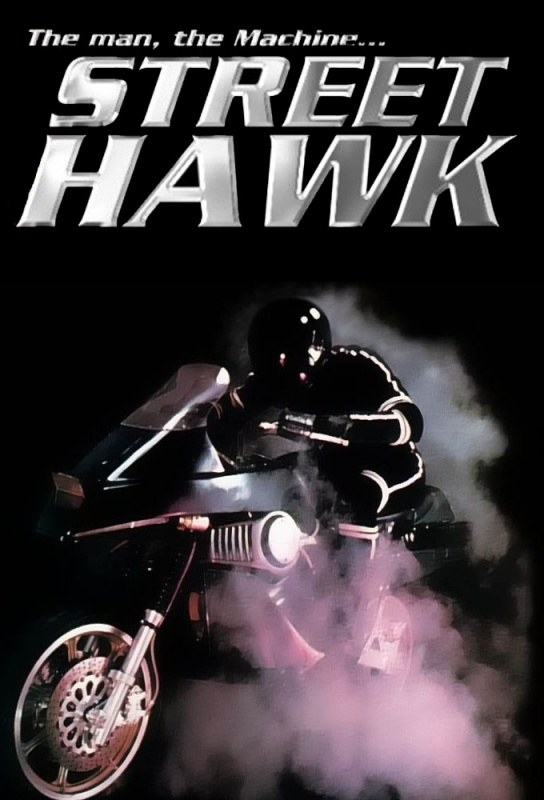
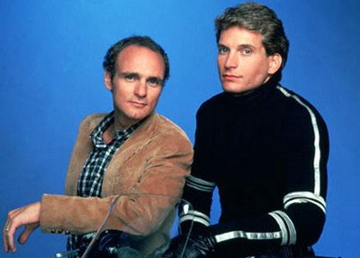
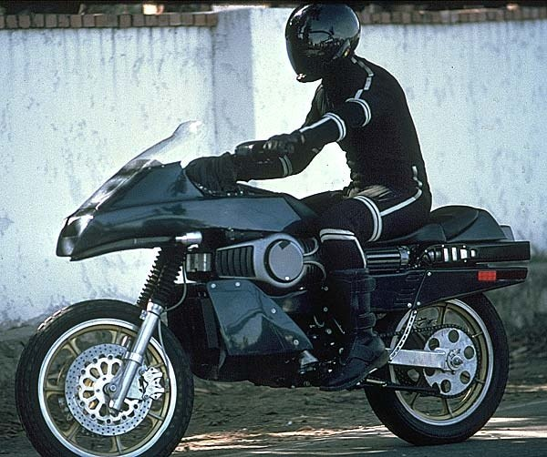

Je devais avoir sept ans.
Le samedi après-midi, M6 diffusait Tonnerre mécanique. Je m'installais devant l'écran avant même le début, pour ne pas rater une seconde du générique. Cette musique électronique, pulsée, presque venue d'un autre monde. Les premières notes suffisaient à me faire décoller.
Et puis il y avait la moto. Noire, profilée, bourrée d'électronique, avec ses lumières, ses écrans et ses armes cachées. Une machine qui semblait sortie du futur. Quand Jesse Mach enclenchait l'hyper-vitesse, la route s'étirait, le décor disparaissait, et pendant quelques secondes plus rien ne pouvait l'arrêter.
Il y avait aussi sa tenue. La combinaison, le casque intégral à la visière sombre : un héros sans visage, mi-homme, mi-machine. Pour un enfant de sept ans, c'était la définition même du mot « cool ».
Aujourd'hui encore, je ne parviens pas à regarder Tonnerre mécanique autrement qu'avec mes yeux d'enfant. Et je n'en ai aucune envie.
Ce soir, on enclenche l'hyper-vitesse.

Street Hawk : « The man, the machine… »
Tonnerre mécanique.
Le titre original est Street Hawk. La série est créée par Paul M. Belous et Robert Wolterstorff, produite par Universal Television, et diffusée aux États-Unis sur la chaîne ABC en 1985. Elle ne compte qu'une saison de treize épisodes. La musique est signée Tangerine Dream, le groupe allemand pionnier de la musique électronique.
Jesse Mach, ancien champion de motocross, était policier à Los Angeles jusqu'à ce qu'une blessure au genou l'écarte du terrain. Relégué derrière un bureau, il est recruté par Norman Tuttle, un ingénieur du gouvernement, pour piloter un prototype ultra-secret : une moto de combat bardée d'électronique, capable d'atteindre plus de 450 km/h grâce à son hyper-vitesse.
Le jour, Jesse est un policier chargé des relations avec la population. La nuit, casqué de noir, il devient Street Hawk et combat le crime dans les rues de la ville.
Dans le rôle de Jesse, Rex Smith, chanteur et acteur venu de Broadway. À ses côtés, Joe Regalbuto dans le rôle de Norman Tuttle, le génie de l'électronique qui guide son pilote depuis son poste de commande.
Tonnerre mécanique, c'est K 2000 sur deux roues : un justicier, une machine du futur, et une musique qui donne envie d'enfourcher la nuit.
Au milieu des années 80, la télévision américaine se passionne pour les machines. K 2000 et sa voiture qui parle font un triomphe depuis 1982. En 1984 arrivent Supercopter et Tonnerre de feu, deux séries autour d'hélicoptères de combat. Chaque chaîne veut son véhicule du futur.
Universal Television, déjà derrière K 2000 et Supercopter, imagine alors la version deux-roues : une moto de combat pilotée par un justicier masqué. Le projet est confié à Paul M. Belous et Robert Wolterstorff, et la chaîne ABC l'achète.
Pour le rôle principal, la production choisit Rex Smith. Chanteur à succès, révélé à Broadway dans Les Pirates de Penzance aux côtés de Linda Ronstadt, il a le physique d'une idole et l'aisance d'un acteur. Il pilote lui-même certaines scènes, mais les cascades les plus dangereuses sont confiées à des motards professionnels.
La moto est le vrai défi. L'équipe part d'une Honda tout-terrain, qu'elle habille d'un carénage noir futuriste, de lumières et de faux équipements militaires. Plusieurs exemplaires sont construits pour les besoins du tournage. Pour l'hyper-vitesse, la production mise sur les effets de l'époque : images accélérées, traînées lumineuses, et une moto qui semble se dissoudre dans la nuit.
Pour la musique, la série fait un choix audacieux : Tangerine Dream. Le groupe allemand, pionnier des synthétiseurs, a déjà signé des bandes originales de films comme Risky Business ou Legend. Leur générique électronique, nerveux et hypnotique, donne à la série une identité sonore unique.
Le téléfilm pilote est diffusé en janvier 1985, et la série suit dans la foulée. Mais les audiences ne décollent pas. ABC arrête Street Hawk après treize épisodes, au printemps 1985. En France, M6, lancée en 1987, la diffuse quelques années plus tard, et lui offre une seconde vie auprès des enfants.

Norman Tuttle et Jesse Mach
Los Angeles, 1985.
Jesse Mach est un policier à moto, ancien champion de motocross. Lors d'une intervention qui tourne mal, il est grièvement blessé au genou. Pour la police, sa carrière de terrain est finie. On le cantonne aux relations publiques : visites dans les écoles, réunions de quartier, paperasse.
Mais un homme s'intéresse à lui. Norman Tuttle, ingénieur pour le gouvernement fédéral, travaille sur un projet top secret : Street Hawk, une moto de combat conçue pour lutter contre le crime urbain. Bardée d'électronique, d'armes et de capteurs, elle peut atteindre des vitesses folles grâce à son hyper-vitesse. Il ne lui manque qu'un pilote.
Norman propose un marché à Jesse : une opération qui soignera son genou, en échange de sa collaboration. Jesse accepte. Il a ses propres raisons : il veut retrouver ceux qui ont tué un ami.
Commence alors une double vie. Le jour, Jesse sourit aux enfants et serre des mains pour la police. La nuit, casqué et vêtu de noir, il fonce dans les rues de la ville sur Street Hawk, guidé à distance par Norman depuis un poste de commande secret.
Personne ne doit savoir qui se cache sous le casque. Ni ses collègues, ni son capitaine, ni les criminels qu'il traque.
Un flic mis à l'écart, un ingénieur qui ne jure que par la technologie, et une machine capable de dépasser tout ce qui roule.
Tonnerre mécanique est un pur produit de son époque. Au milieu des années 80, la technologie fascine : les ordinateurs entrent dans les maisons, les jeux vidéo envahissent les salles d'arcade, et le futur semble à portée de main. La série transforme cet imaginaire en héros : un homme et une machine qui, ensemble, deviennent plus forts que le crime.
Sa première réussite, c'est la moto. Street Hawk n'est pas qu'un véhicule, c'est un personnage. Sa silhouette noire, ses lumières, son tableau de bord couvert d'écrans et son hyper-vitesse en font un objet de rêve pour tous les enfants qui la regardaient. Chaque enclenchement de l'hyper-vitesse est mis en scène comme un rituel : le compte à rebours, le bruit du moteur, puis la route qui s'étire en traînées de lumière.
La deuxième, c'est le duo. Jesse est un homme d'action, impulsif, qui fonce d'abord. Norman est un scientifique prudent, attaché à son prototype, qui supplie son pilote de ne pas l'abîmer. Leur relation rappelle celle de Michael Knight et de KITT, mais en plus humaine : les échanges radio entre la route et le poste de commande apportent de l'humour et un vrai lien d'amitié.
La troisième, c'est la musique. Le travail de Tangerine Dream donne à la série une atmosphère à part. Là où la plupart des séries d'action de l'époque misent sur des cuivres et des guitares, Tonnerre mécanique plonge dans les synthétiseurs. Le générique, avec ses pulsations électroniques, reste l'un des plus marquants de la décennie.
Enfin, il y a la figure du héros masqué. Avec son casque intégral et sa combinaison noire, Jesse Mach devient presque un super-héros : un homme ordinaire le jour, un justicier sans visage la nuit.
La série a pourtant ses faiblesses. Les intrigues sont simples, souvent répétitives, et les méchants rarement mémorables. Certains effets de l'hyper-vitesse paraissent aujourd'hui naïfs.
Mais c'est justement ce qui fait son charme. Tonnerre mécanique ne cherche pas le réalisme : elle vend du rêve, de la vitesse et du futur. Et pour un enfant de sept ans, c'était exactement ce qu'il fallait.

Street Hawk, la moto de combat
Tonnerre mécanique n'a pas eu le temps de s'installer.
D'abord, sa vie a été très courte. Treize épisodes, une seule saison, quelques mois d'antenne en 1985. K 2000 a duré quatre saisons, Supercopter aussi, de quoi s'ancrer dans les mémoires. Street Hawk, elle, a disparu avant même d'avoir pu se construire une vraie mythologie.
Ensuite, elle est arrivée trop tard dans la vague des véhicules du futur. K 2000 avait déjà imposé le modèle, et pour beaucoup, Tonnerre mécanique n'était que sa déclinaison à deux roues. Elle a souffert de la comparaison avec une série plus ancienne, plus longue et plus populaire.
Sa moto n'a pas non plus connu le destin commercial de KITT. Peu de jouets, peu de produits dérivés, peu de rediffusions dans les années 90 et 2000. Sans objets ni rendez-vous réguliers pour entretenir le souvenir, la série s'est effacée peu à peu.
Son héros n'a pas eu le temps de devenir une icône. Rex Smith a poursuivi sa carrière surtout dans la musique et au théâtre. Il n'a pas connu la célébrité durable d'un David Hasselhoff, et aucun grand rôle n'est venu raviver le souvenir de Jesse Mach.
Enfin, sa technologie a vieilli plus vite que le reste. Ses écrans, ses effets lumineux et son hyper-vitesse incarnaient le futur en 1985. Quelques années plus tard, ils appartenaient déjà au passé.
Et pourtant, ceux qui l'ont vue enfants ne l'ont jamais oubliée. Un générique de Tangerine Dream, une moto noire et un héros casqué suffisent à rallumer le souvenir. Une série éclair, disparue presque aussi vite que sa moto en hyper-vitesse.
Parce que c'est une capsule temporelle parfaite des années 80, et qu'elle se regarde encore avec plaisir.
Treize épisodes, c'est une saison qu'on traverse en quelques soirées. Pas de longue mythologie à rattraper, pas de saisons à rallonge : une histoire courte, efficace, qui va droit au but.
Parce que la moto n'a rien perdu de son pouvoir de fascination. Sa silhouette noire, ses lumières, son tableau de bord futuriste : Street Hawk reste l'un des plus beaux véhicules de la télévision des années 80. La revoir foncer dans la nuit, c'est retrouver l'excitation des samedis après-midi.
Parce que le générique de Tangerine Dream est une œuvre à part entière. Ses nappes de synthétiseurs et son rythme hypnotique annoncent les sons électroniques qui reviendront à la mode des décennies plus tard. Pour beaucoup, il suffit des premières notes pour retrouver un sentiment de vitesse et de liberté.
Parce que le duo Jesse-Norman fonctionne toujours. Le pilote qui prend tous les risques, l'ingénieur qui s'arrache les cheveux pour sa machine : leur complicité, faite d'humour et de loyauté, donne à la série son cœur.
Et parce que certaines séries ne se regardent pas avec les yeux d'un adulte. Tonnerre mécanique est faite pour le regard de l'enfant qu'on était : celui qui rêvait d'enfiler la combinaison, de baisser la visière du casque et d'enclencher, lui aussi, l'hyper-vitesse. La revoir, c'est lui redonner la place devant l'écran.
Certaines séries vivent longtemps. D'autres traversent la télévision comme un éclair, mais laissent une trace bien plus profonde que leur durée.
Tonnerre mécanique, pour moi, c'était le samedi après-midi sur M6. J'avais sept ans. Je m'asseyais devant l'écran et j'attendais le générique. Ces notes électroniques qui montaient dans le salon, la moto noire qui jaillissait dans la nuit, le casque à la visière sombre, et cette promesse : l'hyper-vitesse. Pendant cinquante minutes, je n'étais plus dans le salon. J'étais sur la route, à côté de Jesse Mach.
Treize épisodes seulement. Une série arrêtée trop tôt, éclipsée par d'autres, presque oubliée. Mais pour l'enfant que j'étais, elle n'avait rien de petit. Elle était le futur, la vitesse, la liberté.
Aujourd'hui encore, je la regarde avec ces mêmes yeux. Et c'est peut-être ça, le vrai pouvoir de Tonnerre mécanique : on ne la revoit pas avec nostalgie, on la revit.
La cassette est dans le lecteur. On rembobine.
Titre original
Street Hawk
Pays
États-Unis
Genre
Action / Science-fiction
Diffusion
ABC, 1985 (1 saison, 13 épisodes)
Créateurs
Paul M. Belous · Robert Wolterstorff
Production
Universal Television
Musique
Tangerine Dream
Fil conducteur
Séries TV cultes — EP. 05
SOMEDAY — SÉRIES EP. 05